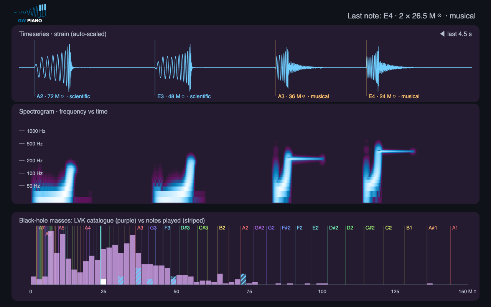
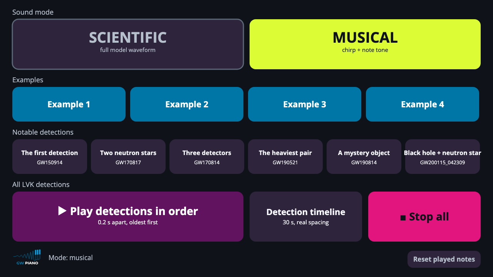

← Back to GW Piano
Outreach stand build guide
GW Piano Stand
A standalone keyboard instrument. Each key plays an IMRPhenomD chirp from an equal-mass black-hole binary, and one button switches between scientific and musical sounds. A Raspberry Pi 5 runs everything and needs no laptop. It drives a small screen showing the current mode and a 10-inch screen above the keys showing a live timeseries, spectrogram and mass histogram as keys are pressed.
The stand

The keyboard sits at standing height on an X-stand. The touch screen, with the Pi on its back, and a monitor stand on a table beside it (see Placing the screens). Two small speakers sit on the table either side of the monitor, angled at the player, and headphones hang from the stand. A table in front can hold printed mass cards, so visitors can find "their" black hole on the histogram.
10.1" screen: timeseries, spectrogram and histogram

The top strip is a live timeseries of the sound being played, scrolling from right to left over the last 4.5 seconds, with each note labelled by its mass and mode. Underneath, a spectrogram on the same time axis shows each chirp sweeping up in frequency. Musical-mode notes then hold a flat line at the note's pitch. The bottom panel is the catalogue histogram from the website. Played notes stack up as striped bars, and the note currently sounding shows in white.
7" touch screen: controls

The touch screen has large targets for small hands. It has the sound mode switch, the four example tunes, Play detections in order with its In order / Preserve timeline toggle, Stop all and Reset. If the keyboard has a pad set up as a mode switch (optional, see setup), it switches mode too, and both stay in sync.
The two modes
ScientificThe full generated waveform, including its quiet inspiral lead-in. It matches the downloadable WAVs, with no added tone. This is the default.
MusicalA short segment around the waveform peak that crossfades into a 350 ms decaying sine at the note frequency. It matches the website's musical mode. The tail is synthetic, not a physical ringdown.
Both modes cover all 88 keys (A0–C8). Each key corresponds to a mass of m = 30 M☉ × f_peak(30,30) / f_note per black hole, so lower keys mean heavier systems.
How it connects
The Pi 5 has no headphone jack, so audio comes from a small USB audio interface. It keeps the top of the Pi clear for the cooler, needs no configuration, and can be tested on any laptop. The 7-inch screen uses the DSI ribbon, which leaves both micro-HDMI ports free.
Parts list
These are UK prices including VAT, checked November 2026. Raspberry Pi prices have changed a lot recently, so check before you order.
Placing the screens
The keyboard stands on its X-stand with a table beside it. The touch screen sits on the table in its case and stand, with the Pi mounted on its back, within easy reach of the player. The monitor or TV stands on the same table where the player and onlookers can see it, connected by the 2 m micro-HDMI cable. Only the Pi power lead, the monitor and the speakers need sockets.
Power and volume
Sockets: a standard 4-way extension lead is enough, and a 6-way gives room to spare. Only three devices need a mains plug:
- Raspberry Pi 5 power supply. This also powers the touch screen, the USB audio interface and the keyboard.
- 10.1" display power adapter. Some models take USB-C power instead and need no socket.
- Desktop speakers. Many compact models run from USB and need no socket.
The headphone amp usually runs on USB or batteries. Use a 6-way lead if the power adapters are bulky, because they can block the socket next to them, and you'll have spare sockets for a phone charger or a lamp. Choose a lead with a surge protector, and tape it down out of the way of visitors' feet.
These figures are estimates from typical device ratings; measure with a plug-in power meter before relying on them. Use the official 27 W Pi 5 supply, because it lets the Pi power the keyboard over USB. Where there is no socket, a portable power station of about 250 Wh runs the stand for a full day (about 8 hours at the typical draw).
Audible, but not overpowering
The goal is for the stand to be heard clearly by the people at it in a busy room, without drowning out neighbouring stands.
- Point the sound at the audience. Two compact speakers on the table either side of the monitor, angled towards the player and the people gathered in front, reach the group directly. Speakers aimed outwards, or raised on poles, spread the sound across the room instead. Speakers with some headroom (10–20 W per side) stay clear at this level instead of distorting.
- Hard volume cap. Set the maximum level once in software (the ALSA mixer level; the kiosk page also caps its own output level), so turning the speaker knob cannot push it past that level. Busy halls run at about 65–75 dB(A), so aim for about 75–80 dB(A) at the player's position. Set it with a phone sound-meter app at the event, then check the level at the next stand along: there it should sit below the room's own background noise.
- Headphones for busy or quiet rooms. A small headphone amp drives two pairs of closed-back headphones, so the stand can go completely silent. Wipe the headphones between visitors.
- Mind the low notes. Bass carries furthest. The sound is already one-shot and short, but if neighbours complain, use the low-cut on the speakers or keep visitors to the middle octaves.
- Example tunes and Play detections in order are the loudest moments, because many notes overlap. Lower the cap for those, or run them on headphones.
Setup
On the stand, the sound and both screens come from two pages of the GW Piano site running full-screen in Chromium. kiosk-live.html (10.1" screen) plays the sound-pack samples for each key, follows the mode switch, and draws the timeseries, spectrogram and histogram. kiosk-controls.html (touch screen) sends it the mode, example and detection commands. The two pages share state, so the touch screen and the mode pad always agree. No separate sampler is needed; GW-Piano.sfz remains available for use in other samplers.
1. Build the site on a laptop
Build the GW Piano site on a laptop rather than on the Pi. The build generates the waveforms with LALSimulation, which is slow on a Pi and may not install there; the Pi only needs the finished site.
git clone https://github.com/icg-gravwaves/GWPiano.git && cd GWPiano
python3 -m venv .venv && . .venv/bin/activate && pip install .
gw-piano --output dist
2. Prepare the Pi
- On the laptop, write Raspberry Pi OS (64-bit, with desktop) to the microSD card with Raspberry Pi Imager. In its settings, set the hostname
gwpiano, a user account and your Wi-Fi, and enable SSH.
- Fit the active cooler, mount the Pi on the back of the touch screen inside the display case, and connect the display ribbon to a DSI port and its power lead to the GPIO pins. Connect the 10.1" display (or any HDMI monitor or TV) to HDMI0, and the keyboard and USB audio interface to the USB ports.
- Select the USB audio interface as the audio output (right-click the volume icon on the desktop taskbar). Chromium plays through the default output.
- In Screen Configuration, rotate the touch screen to landscape and place it to the left of the main display.
- Update the Pi once while it is online:
sudo apt update && sudo apt full-upgrade -y. Chromium comes with Raspberry Pi OS.
Then copy the built site from the laptop to the Pi over the network:
scp -r dist gwpiano.local:~/gw-piano-site
To update the stand later, rebuild on the laptop and copy dist across again. The stand needs no internet connection at the event.
3. Optional: set a mode pad
The touch screen switches mode on its own. A pad on the keyboard lets a player switch mode without taking a hand off the keys, and keeps a way to switch if the touch screen fails. Skip this step if the keyboard has no programmable pads.
- In the keyboard's editor software (run once from any computer), set one pad or button to send CC20 with toggle behaviour, values 0 and 127, and save it to the keyboard.
- If the pad is lit, give it a bright colour so visitors can find it.
4. Start the kiosk
Serve the built site locally and open both pages in one Chromium profile. One profile is needed so the pages can talk to each other.
python3 -m http.server 8000 --directory ~/gw-piano-site &
chromium-browser --autoplay-policy=no-user-gesture-required --noerrdialogs --disable-infobars \
--app=http://localhost:8000/kiosk-live.html --window-position=720,0 --start-fullscreen &
sleep 5
chromium-browser --app=http://localhost:8000/kiosk-controls.html --window-position=0,0 --start-fullscreen &
- The first time, Chromium asks to allow MIDI devices on the live page. Allow it once; the choice is saved in the profile.
- For testing without a keyboard, the live page also responds to the computer keys A W S E D F T G Y H U J K (C4–C5), and M switches mode.
5. Autostart and lock down
- Put the commands above in a systemd user service or the desktop autostart file, so the stand is playable about 30 seconds after you plug it in.
- Use the read-only overlay filesystem (
raspi-config → Performance), so the SD card survives power being pulled at the end of the day.
- Turn off screen blanking.
6. Check it stays cool
The Pi does the most work on the stand, running the sound, two screens and the spectrogram. With the active cooler it should sit at about 50–65 °C, well below the 80–85 °C where it slows itself down. Keep the vents on the back of the display case clear of walls, cloths and leaflets, and keep the stand out of direct sun. Before the first event, run the stand for a couple of hours and check over SSH:
vcgencmd measure_temp # should stay under about 70 °C
vcgencmd get_throttled # should report throttled=0x0
What still needs building
- Done: the sound pack has both modes, with
GW-Piano.sfz switching on CC20.
- Done: the kiosk pages
kiosk-live.html and kiosk-controls.html, tested in a desktop browser with computer keys. They have not yet been run on a Pi with a MIDI keyboard.
- To do: an autostart script and Pi image, so the stand can be rebuilt from scratch, and a check of audio latency and frame rate on the Pi 5.
On the day
- Power on the speakers last and switch them off first, to avoid pops.
- Before the doors open, check the volume from the neighbouring stands, and ask them to tell you if it bothers them.
- Start with musical mode for melodies. Switch to scientific mode to show that heavier binaries chirp lower and for longer.
- A single key in scientific mode is the "what LIGO hears" moment. The waveform screen shows the matching strain.
Volunteer briefing
Volunteers do not need to play the piano. Single key presses are the science, and the touch screen plays the musical parts.
The idea in one line: each key is the sound of two black holes merging. Low notes are heavy black holes; high notes are light ones.
Getting a visitor started
- "Press any key." Start in scientific mode: one key gives the chirp that LIGO hears.
- "Now try one at the far left, then one at the far right." Heavy black holes chirp lower and for longer; light ones chirp short and high.
- Point at the monitor. The timeseries is the wave they just made. The spectrogram shows the frequency sweeping up as the black holes spiral together. On the histogram, the coloured line marks their key's mass, and the purple bars are the real black holes found by LIGO, Virgo and KAGRA.
- "Which key matches the most common real black holes?" Visitors hunt along the keyboard for the tallest purple bars.
For visitors who want music: tap MUSICAL on the touch screen, then Example 1–4. The tune plays by itself, and visitors can join in on the keys.
The showpiece
- ▶ Play detections in order plays every real detection, oldest first: "That's every black-hole merger we've heard."
- Detection timeline plays them with their real spacing, squeezed into 30 seconds.
- ■ Stop all stops everything.
Housekeeping
- Reset played notes clears the histogram between groups.
- If it is too loud or the room goes quiet, switch to headphones rather than turning the speakers up.
- If something freezes, unplug the Pi's power and plug it back in. The stand restarts by itself in about 30 seconds.
Useful lines
- "You don't need to play piano. Every key is an experiment."
- "Real gravitational waves from these black holes are in the audio band, so we can turn them straight into sound."
- "To play what the LISA space mission will hear, you'd need a piano about 2 metres longer, and you'd wait several minutes for each wave to go by." Each key's pitch is the merger frequency of two equal-mass black holes, so each octave down doubles the mass; LISA's most sensitive band, around 3 mHz, is about 13 octaves below the lowest A, or black holes of a few million solar masses each.